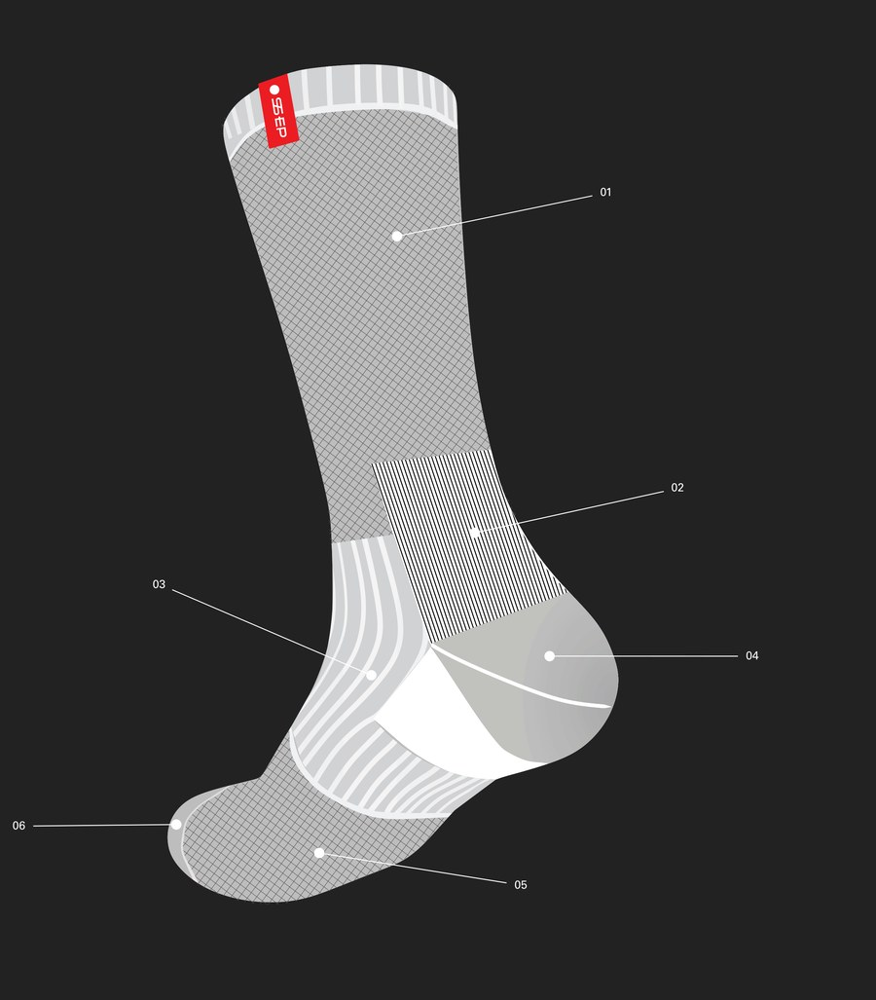
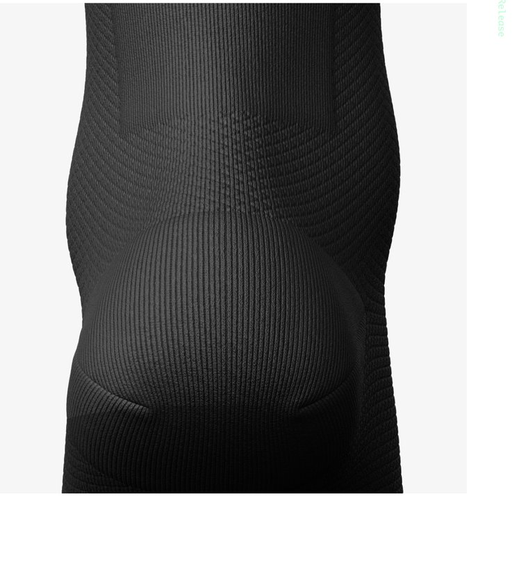
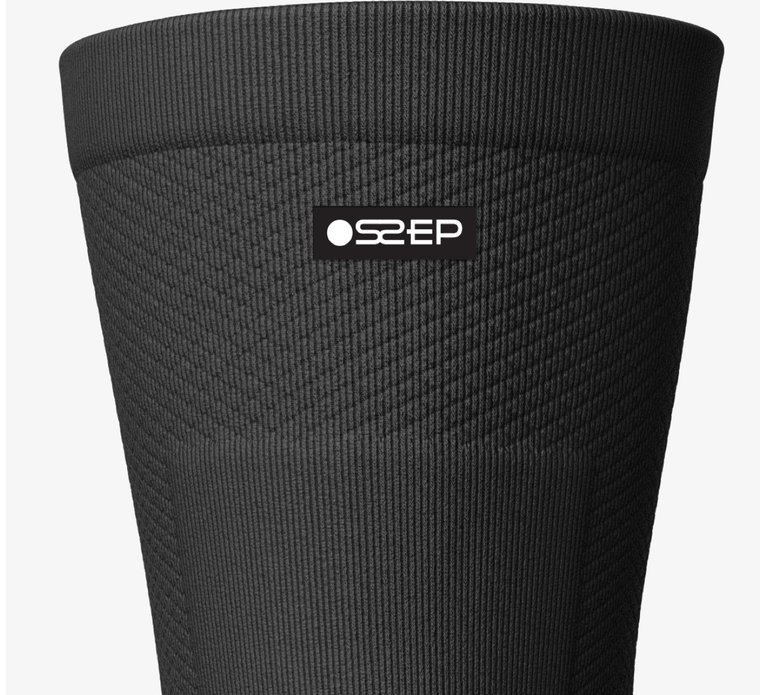

05 — Technology
The Science
of the Sock
A sock is simple — no moving parts. So we concentrated the innovation where it counts: the fiber, the knit and the construction. Advanced materials and leading-edge manufacturing, engineered to reduce moisture, odor and irritation.
Shop the Essential Sock →
The numbered map, explained
Six support zones, engineered into a single seamless sock.
Compression Cross Stitch
Wraps the calf to stabilize your ankle and provide arch support where you need it most.
Achilles Patch
Pulls the Achilles and connects the ankle to the heel for a locked-in, supportive fit.
Arch Support
An elasticized band delivers support and pain relief to the arch, aiding muscle recovery.
Heel Cushion
Ergonomic padding absorbs impact exactly where you land hardest, without adding bulk.
Compression Cross Stitch
Stabilizes the ball of the foot and reinforces arch support through every stride.
Toe Cushion
Impact support across the toe box, finished with an ultra-flat seam that lies against the skin.

Fiber 01
Silver DryStat®
We weave silver ions directly into our patented Silver DryStat® fabric to inhibit bacteria growth and reduce unpleasant odors. Moisture-wicking polypropylene keeps skin dry and comfortable, whether it’s snowing, sunny or somewhere in between.
- 20–30
- Elasticity
- 22.5 fps
- Weaving
- 2.24 cm
- Stitching
- 1250
- Thread count
Fiber 02
Prolen®
The special polypropylene yarn at the core of every pair, spun by Fibrochem in Slovakia — the only mill in the world producing it in a count fine enough for sock knitting. Its low conductivity makes Prolen an incredibly effective wicking material, so your feet stay dry regardless of activity level or outdoor conditions.

Constructed for performance
Performance-related details that make up the sock’s genetics.
Soft Padding in Flexible Structure
Ergonomic padding cushions feet at high-impact zones for greater comfort without adding bulk.
Arch Plantar Support
An elasticized arch band adjusts to different foot shapes and sizes, delivering made-for-you fit and support.
Piquet Ventilation Knit
Highly breathable material helps perspiration evaporate, keeping feet cool and dry during the most strenuous activities.
Ultra Flat Toe Seam
Toe pockets are closed with ultra-flat seaming that lies flat against the skin, eliminating pressure points.
Ankle Support
An elasticized ankle brace supports the Achilles tendon while providing greater stability for every level of activity.
Bi-Elastic Knit
Mechanical elasticized knits meet Spandex to form a fabric that hugs and contours feet in all the right places.
Italian manufacturing, our history and tried and true yarn stitching process.
Except a special synthetic yarn, every fiber comes from Italian mills certified to Oeko-Tex Standard 100. We work only with pre-dyed and dope-dyed yarns — no water, no chemical dye baths — the know-how, the best knitting machines, the best yarns, stitch by skillful stitch.
About Ossep